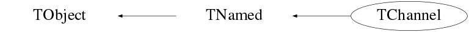

Function Members (Methods)
public:
| TChannel() | |
| TChannel(const TChannel&) | |
| virtual | ~TChannel() |
| void | TObject::AbstractMethod(const char* method) const |
| void | AddCFDCoefficient(double temp) |
| static void | AddChannel(TChannel*, Option_t* opt = "") |
| void | AddENGCoefficient(double temp) |
| void | AddLEDCoefficient(double temp) |
| void | AddTIMECoefficient(double temp) |
| virtual void | TObject::AppendPad(Option_t* option = "") |
| virtual void | TObject::Browse(TBrowser* b) |
| double | CalibrateCFD(double) |
| double | CalibrateCFD(int) |
| double | CalibrateENG(double) |
| double | CalibrateENG(int) |
| double | CalibrateLED(double) |
| double | CalibrateLED(int) |
| double | CalibrateTIME(double) |
| double | CalibrateTIME(int) |
| static TClass* | Class() |
| virtual const char* | TObject::ClassName() const |
| virtual void | Clear(Option_t* opt = "") |
| virtual TObject* | TNamed::Clone(const char* newname = "") const |
| virtual Int_t | TNamed::Compare(const TObject* obj) const |
| virtual void | TNamed::Copy(TObject& named) const |
| static void | CopyChannel(TChannel*, TChannel*) |
| virtual void | TObject::Delete(Option_t* option = "")MENU |
| static void | DeleteAllChannels() |
| void | DestroyCalibrations() |
| void | DestroyCFDCal() |
| void | DestroyENGCal() |
| void | DestroyLEDCal() |
| void | DestroyTIMECal() |
| virtual Int_t | TObject::DistancetoPrimitive(Int_t px, Int_t py) |
| virtual void | TObject::Draw(Option_t* option = "") |
| virtual void | TObject::DrawClass() constMENU |
| virtual TObject* | TObject::DrawClone(Option_t* option = "") constMENU |
| virtual void | TObject::Dump() constMENU |
| virtual void | TObject::Error(const char* method, const char* msgfmt) const |
| virtual void | TObject::Execute(const char* method, const char* params, Int_t* error = 0) |
| virtual void | TObject::Execute(TMethod* method, TObjArray* params, Int_t* error = 0) |
| virtual void | TObject::ExecuteEvent(Int_t event, Int_t px, Int_t py) |
| virtual void | TObject::Fatal(const char* method, const char* msgfmt) const |
| virtual void | TNamed::FillBuffer(char*& buffer) |
| static TChannel* | FindChannel(int temp_address) |
| static TChannel* | FindChannelByNumber(int temp_numebr) |
| virtual TObject* | TObject::FindObject(const char* name) const |
| virtual TObject* | TObject::FindObject(const TObject* obj) const |
| int | GetAddress() |
| double | GetCFDChi2() |
| vector<double> | GetCFDCoeff() |
| static TChannel* | GetChannel(int temp_address) |
| static map<int,TChannel*>* | GetChannelMap() |
| const char* | GetChannelName() |
| const char* | GetDigitizerType() |
| virtual Option_t* | TObject::GetDrawOption() const |
| static Long_t | TObject::GetDtorOnly() |
| double | GetENGChi2() |
| vector<double> | GetENGCoeff() |
| virtual const char* | TObject::GetIconName() const |
| int | GetIntegration() |
| double | GetLEDChi2() |
| vector<double> | GetLEDCoeff() |
| virtual const char* | TNamed::GetName() const |
| int | GetNumber() |
| static int | GetNumberOfChannels() |
| virtual char* | TObject::GetObjectInfo(Int_t px, Int_t py) const |
| static Bool_t | TObject::GetObjectStat() |
| virtual Option_t* | TObject::GetOption() const |
| int | GetStream() |
| double | GetTIMEChi2() |
| vector<double> | GetTIMECoeff() |
| virtual const char* | TNamed::GetTitle() const |
| virtual UInt_t | TObject::GetUniqueID() const |
| int | GetUserInfoNumber() |
| virtual Bool_t | TObject::HandleTimer(TTimer* timer) |
| virtual ULong_t | TNamed::Hash() const |
| virtual void | TObject::Info(const char* method, const char* msgfmt) const |
| virtual Bool_t | TObject::InheritsFrom(const char* classname) const |
| virtual Bool_t | TObject::InheritsFrom(const TClass* cl) const |
| virtual void | TObject::Inspect() constMENU |
| void | TObject::InvertBit(UInt_t f) |
| virtual TClass* | IsA() const |
| virtual Bool_t | TObject::IsEqual(const TObject* obj) const |
| virtual Bool_t | TObject::IsFolder() const |
| Bool_t | TObject::IsOnHeap() const |
| virtual Bool_t | TNamed::IsSortable() const |
| Bool_t | TObject::IsZombie() const |
| virtual void | TNamed::ls(Option_t* option = "") const |
| void | TObject::MayNotUse(const char* method) const |
| virtual Bool_t | TObject::Notify() |
| void | TObject::Obsolete(const char* method, const char* asOfVers, const char* removedFromVers) const |
| static void | TObject::operator delete(void* ptr) |
| static void | TObject::operator delete(void* ptr, void* vp) |
| static void | TObject::operator delete[](void* ptr) |
| static void | TObject::operator delete[](void* ptr, void* vp) |
| void* | TObject::operator new(size_t sz) |
| void* | TObject::operator new(size_t sz, void* vp) |
| void* | TObject::operator new[](size_t sz) |
| void* | TObject::operator new[](size_t sz, void* vp) |
| TChannel& | operator=(const TChannel&) |
| virtual void | TObject::Paint(Option_t* option = "") |
| virtual void | TObject::Pop() |
| virtual void | Print(Option_t* opt = "") |
| virtual Int_t | TObject::Read(const char* name) |
| static void | ReadCalFile(const char* filename = "") |
| virtual void | TObject::RecursiveRemove(TObject* obj) |
| void | TObject::ResetBit(UInt_t f) |
| virtual void | TObject::SaveAs(const char* filename = "", Option_t* option = "") constMENU |
| virtual void | TObject::SavePrimitive(ostream& out, Option_t* option = "") |
| void | SetAddress(int& tmpadd) |
| void | TObject::SetBit(UInt_t f) |
| void | TObject::SetBit(UInt_t f, Bool_t set) |
| void | SetCFDChi2(double temp) |
| void | SetChannelName(const char* tmpname) |
| void | SetDigitizerType(const char* tmpstr) |
| virtual void | TObject::SetDrawOption(Option_t* option = "")MENU |
| static void | TObject::SetDtorOnly(void* obj) |
| void | SetENGChi2(double temp) |
| void | SetIntegration(int& tmpint) |
| void | SetLEDChi2(double temp) |
| virtual void | TNamed::SetName(const char* name)MENU |
| virtual void | TNamed::SetNameTitle(const char* name, const char* title) |
| void | SetNumber(int& tmpnum) |
| static void | TObject::SetObjectStat(Bool_t stat) |
| void | SetStream(int& tmpstream) |
| void | SetTIMEChi2(double temp) |
| virtual void | TNamed::SetTitle(const char* title = "")MENU |
| void | SetTypeName(string& tmpstr) |
| virtual void | TObject::SetUniqueID(UInt_t uid) |
| void | SetUserInfoNumber(int& tempinfo) |
| virtual void | ShowMembers(TMemberInspector&) |
| virtual Int_t | TNamed::Sizeof() const |
| virtual void | Streamer(TBuffer&) |
| void | StreamerNVirtual(TBuffer& ClassDef_StreamerNVirtual_b) |
| virtual void | TObject::SysError(const char* method, const char* msgfmt) const |
| Bool_t | TObject::TestBit(UInt_t f) const |
| Int_t | TObject::TestBits(UInt_t f) const |
| virtual void | TObject::UseCurrentStyle() |
| virtual void | TObject::Warning(const char* method, const char* msgfmt) const |
| virtual Int_t | TObject::Write(const char* name = 0, Int_t option = 0, Int_t bufsize = 0) |
| virtual Int_t | TObject::Write(const char* name = 0, Int_t option = 0, Int_t bufsize = 0) const |
| static void | WriteCalFile(string outfilename = "") |
protected:
| virtual void | TObject::DoError(int level, const char* location, const char* fmt, va_list va) const |
| void | TObject::MakeZombie() |
private:
| TChannel(const char* address) | |
| void | SetChannel(int taddress, int tnumber = 0, string tname = "") |
| static void | trim(string*, const string& trimChars = " \f\n\r\t\v") |
| static void | UpdateChannelNumberMap() |
Data Members
public:
| enum TObject::EStatusBits { | kCanDelete | |
| kMustCleanup | ||
| kObjInCanvas | ||
| kIsReferenced | ||
| kHasUUID | ||
| kCannotPick | ||
| kNoContextMenu | ||
| kInvalidObject | ||
| }; | ||
| enum TObject::[unnamed] { | kIsOnHeap | |
| kNotDeleted | ||
| kZombie | ||
| kBitMask | ||
| kSingleKey | ||
| kOverwrite | ||
| kWriteDelete | ||
| }; |
protected:
| TString | TNamed::fName | object identifier |
| TString | TNamed::fTitle | object title |
private:
| double | CFDChi2 | |
| vector<double> | CFDCoefficients | |
| double | ENGChi2 | |
| vector<double> | ENGCoefficients | |
| double | LEDChi2 | |
| vector<double> | LEDCoefficients | |
| double | TIMEChi2 | |
| vector<double> | TIMECoefficients | |
| unsigned int | address | |
| string | channelname | |
| string | digitizertype | |
| static map<int,TChannel*>* | fChannelMap | |
| static map<int,TChannel*>* | fChannelNumberMap | |
| static TChannel* | fTChannel | |
| int | integration | |
| int | number | |
| int | stream | |
| string | type_name | |
| int | userinfonumber |
Class Charts
{kind=link}
{kind=link}
{kind=link}
{kind=link}

Function documentation
void DeleteAllChannels()
void CopyChannel(TChannel* , TChannel* )
void AddChannel(TChannel* , Option_t* opt = "")
TChannel * GetChannel(int temp_address)
void UpdateChannelNumberMap()
TChannel * FindChannel(int temp_address)
TChannel * FindChannelByNumber(int temp_numebr)
void SetChannel(int taddress, int tnumber = 0, string tname = "")
void DestroyENGCal()
void DestroyCFDCal()
void DestroyLEDCal()
void DestroyTIMECal()
void DestroyCalibrations()
double CalibrateENG(int )
double CalibrateENG(double )
double CalibrateCFD(int )
double CalibrateCFD(double )
double CalibrateLED(int )
double CalibrateLED(double )
double CalibrateTIME(int )
double CalibrateTIME(double )
void Print(Option_t* opt = "")
printf( DBLUE "%s\t" DYELLOW "0x%08x" RESET_COLOR "\n",this->GetChannelName(),this->GetAddress());
void WriteCalFile(string outfilename = "")
prints the context of addresschannelmap formatted correctly to stdout if no file name is passed to the function. If a file name is passed to the function prints the context of addresschannelmap formatted correctly to a file with the given name. This will earse and rewrite the file if the file already exisits!
void trim(string* , const string& trimChars = " \f\n\r\t\v")
int GetNumberOfChannels()
static TIter *GetChannelIter() { TIter *iter = new TIter(fChannelList); return iter;}
{ return fChannelMap->size(); } TChannel()
const char * GetDigitizerType()
write the rest of the gettters/setters...
{ return digitizertype.c_str(); }